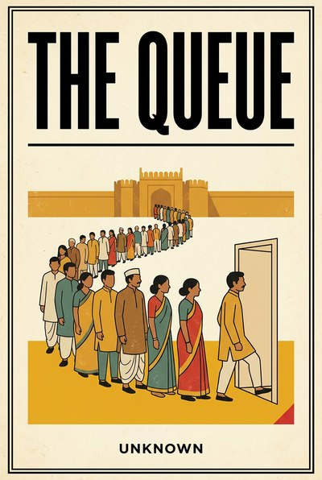

Library › History
The Queue — Summary & Key Lessons

A short history of waiting: what the line outside teaches about power, paper and getting things done.
📖 OPEN THE FULL INTERACTIVE BREAKDOWN →🌐 Read it in Hindi, Hinglish, Gujarati, Tamil & 22 more languages — free, with audio.
💡 The Big Idea
Every queue is a policy in disguise. Where something is scarce and permission is needed, someone controls the line, and the line itself becomes an economy: of patience, of influence, of middlemen who sell your place in it. This book reads history through its waiting rooms, from the scooter that took years to arrive under the license raj to the customs shed, the visa counter and the approval chain in your own office. Its ten lessons are about seeing queues clearly: what the gatekeeper is paid to want, why paper is a power currency, when a queue is a filter worth respecting and when it is friction worth killing. The examples are real, drawn from the public record, because the queue has always been where the state, the market and the citizen finally meet face to face.
🧠 The 10 Key Lessons
Lesson 1: Systems Ration by Queue
Chapter 1: The Line as Policy
Where prices are not allowed to clear a market, queues do the rationing instead, and the queue becomes the real price of the thing. License-raj India did not eliminate scarcity; it moved scarcity from the price tag to the waiting list, where it could be enjoyed, sold or lent by whoever controlled the list. Any system that says everyone must wait is telling you who it trusts with time.
📖 Example: The Bajaj Chotti scooter and the Ambassador car carried multi-year waiting lists not because factories could not build them but because the permit system capped who could try; the queue was the shortage wearing a line. Read the full example →
⚡ Do this: Name the longest queue your customers or you personally stand in. Write down what its true price is in hours and rupees, and who benefits from keeping it.
Lesson 2: The Gatekeeper's Incentive
Chapter 2: What the Clerk Is Paid to Want
No queue is slow by accident. The person at the window is optimizing for what they are measured, paid or protected by, which is rarely your urgency. Read the gatekeeper's incentive and the queue's behavior becomes predictable: it is long exactly where skipping it is worth something to someone. The skill is not cursing the window, it is pricing the window-keeper.
📖 Example: Loan officers measured on rejection rates build queues of perfect paperwork; procurement teams measured on compliance build queues of quotations; the 1980s import clerk measured on foreign exchange release made every shipment a negotiation with his calendar. Read the full example →
⚡ Do this: For the one approval that gates your biggest goal, write down how the approver is measured. Design your request to make their metric better, not your case louder.
Lesson 3: Paper Is a Power Currency
Chapter 3: The Attestation Economy
In permission systems, documents are not records, they are currency: stamps, photocopies, notarized duplicates, each one a small toll on the bridge to your own life. The state that demands attestation for existence creates an economy of people who sell smoothness. And when the paperwork itself becomes scarce, as with stamp paper in fraud cases, the currency can be counterfeited like any other.
📖 Example: The Telgi stamp paper scandal printed crores of fake currency of exactly this kind, paper that was pure power, and the 1991 crisis airlift was ultimately a failure of paperwork confidence: the rupee's queue at the exchange window had grown longer than the world's patience. Read the full example →
⚡ Do this: Assemble your document kit once, completely, in one folder, physical and digital: identity, address, ownership, registration. Every hour spent there saves a day in a queue later.
Lesson 4: Learn the Season
Chapter 4: The Calendar Behind the Counter
Queues breathe on a calendar. Year-end budget flushes, pre-holiday leave, harvest migration, inspection seasons: the same window moves at different speeds through the year. Amateurs submit when they are ready; professionals submit when the counter is ready to receive. Timing is a form of respect the system pays back.
📖 Example: Exporters who filed customs paperwork in the pre-Diwali crush learned to clear cargo weeks early or not at all, and every government office's March is a run on the year's unspent budget, a season the prepared walk around entirely. Read the full example →
⚡ Do this: Ask the person who runs your most important queue when its slow week is. Put your next submission on that week, deliberately.
Lesson 5: The Informal Map
Chapter 5: Who Actually Decides
The org chart says the officer decides; the room knows the steno, the assistant, the deputy and the retired-but-consulted decide. Every permission system runs on two maps, and the official one is the fiction. The informal map is not a corruption story, it is an information story: it tells you where judgment actually sits and therefore where your case must actually be made.
📖 Example: Any office's peon network routes more truth than its file notings, and modern corporates run the same shadow chart through executive assistants, whose calendars are the real queues of the powerful. Read the full example →
⚡ Do this: Draw the real approval path for your next big ask: who advises, who signals, who signs. Make your case to all three, in their languages, this week.
Lesson 6: Queue-Jumping Is a Relationship
Chapter 6: The Legitimate Shortcut
There is a difference between buying a place in line and being known well enough to be waved forward, and the difference is trust banked before the ask. Systems move for people they can vouch for, because vouching converts a stranger's file into someone's responsibility. The shortcut is not a bribe, it is a reputation arriving ahead of you.
📖 Example: Post-1991, the Tata and Birla groups cleared approvals in single windows partly on decades of institutional credibility, and the startup world repeats it: the founder with one warm reference clears diligence in days and the unknown one in quarters. Read the full example →
⚡ Do this: Invest in one relationship this month that you will need as a queue-jump later: send them something useful with no ask attached, and remember it takes three deposits before one withdrawal.
Lesson 7: Scarcity Makes Strange Gatekeepers
Chapter 7: The Middleman Economy
Where queues are long, touts grow like shade, and the middleman's service is real even when his methods are not: he sells time, knowledge and nerve. The honest response is not outrage but design, because every middleman is a living audit of a badly built window. Kill his margin by making the official path faster than the unofficial one, and he evaporates without a single raid.
📖 Example: The PDS leak and the agent economy outside every RTO and passport office were the same business: selling the queue back to the people standing in it, thriving exactly as long as the official window stayed slower than the street. Read the full example →
⚡ Do this: List the middlemen between you and your customers, or you and your regulators. Price what each one earns from friction, then pick one friction to remove this quarter and take his margin back as your own.
Lesson 8: Break the Queue From the Supply Side
Chapter 8: Abundance Ends Arguments
No queue in history was shortened by better morals at the counter; it was shortened by more supply behind the door. Rationing ends when abundance arrives, and the reformer's real question is never how to manage the line but how to make the line unnecessary. The Queue's whole history bends at exactly one kind of moment: the day the thing stops being scarce.
📖 Example: Jio's free-data launch erased an entire grey economy of data sharing in months, and the telephone booking clerk, the scooter waitlist and the gas cylinder agent each vanished the day their shortage did. Read the full example →
⚡ Do this: Ask of your own bottleneck: is this a skill problem or a supply problem? If supply, stop optimizing the line and go build more of the thing.
Lesson 9: When the Queue Is the Product
Chapter 9: The Line as Filter and as Theater
Some queues are friction to be killed, and some are filters to be respected: the exam, the trial, the waitlist that keeps a room full of people who actually want in. And some are pure theater, manufactured to signal value. The wisdom is knowing which of the three you are standing in, because the first deserves design, the second deserves patience and the third deserves your contempt.
📖 Example: Restaurant waitlists and drop-culture releases monetize the queue as advertising, while the iPhone launch line, once real scarcity, became pure stagecraft, and the best private clubs have always known the list is the luxury. Read the full example →
⚡ Do this: Classify your own customer wait: friction, filter or theater. Kill it, honor it or price it accordingly, and write down which you chose and why.
Lesson 10: Reform Before the Crisis
Chapter 10: 1991, the Queue That Ended Itself
The license raj's queues did not shrink by argument; they dissolved in a fortnight when reserves hit two weeks of imports and the alternative to reform was the pawnshop. Every system reforms exactly when waiting becomes more expensive than changing, and the tragedy of the queue is that the people who suffer it rarely hold the pen that could shorten it. If you hold the pen, do not wait for your 1991.
📖 Example: The gold airlift and the devaluation of July 1991 ended four decades of waiting-room economics in months, and every founder who digitized an approval flow after a lost quarter has lived a miniature of the same lesson. Read the full example →
⚡ Do this: Pick your most painful queue, your team's or your own. Remove or automate one step this month, before the crisis volunteers to do it for you.
✅ 5-Step Action Plan
- Price your longest queue in hours and rupees, and name who profits from it.
- Learn how your key gatekeeper is measured; make their metric better.
- Build the complete document kit once so queues never meet you unprepared.
- Invest three no-ask deposits into one future queue-jumping relationship.
- Remove or automate one step of your most painful queue this month.
⚠️ When This Doesn't Work
This is a TheSmallBook Original: written in-house and published under the name Unknown. The queue framework is original; the history is real public record (the license raj, the 1991 crisis, the Telgi scandal, the PDS, Jio's launch) and simplified where a line needed drawing. It is a reading of systems, not an accusation of any person or office.
💀 The Graveyard Proves It
📜 The License Raj — The Economy That Died of Waiting: Two Weeks of Reserves Ended 44 Years of Permits. Burn: Two weeks of import cover left; 47 tonnes of gold airlifted as collateral; 44 years of central planning dismantled within months. Read the full case study →
💬 Best Quotes from The Queue
- “The line outside is the truest org chart in the building.”
- “Paper is patience made official, and whoever prints it holds the pen over your calendar.”
- “Abundance is the only reform that never needs a committee.”
Interactive version: mark lessons as read, listen in your language, share quote cards.